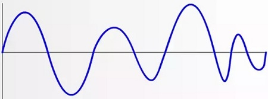
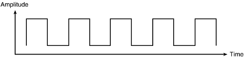
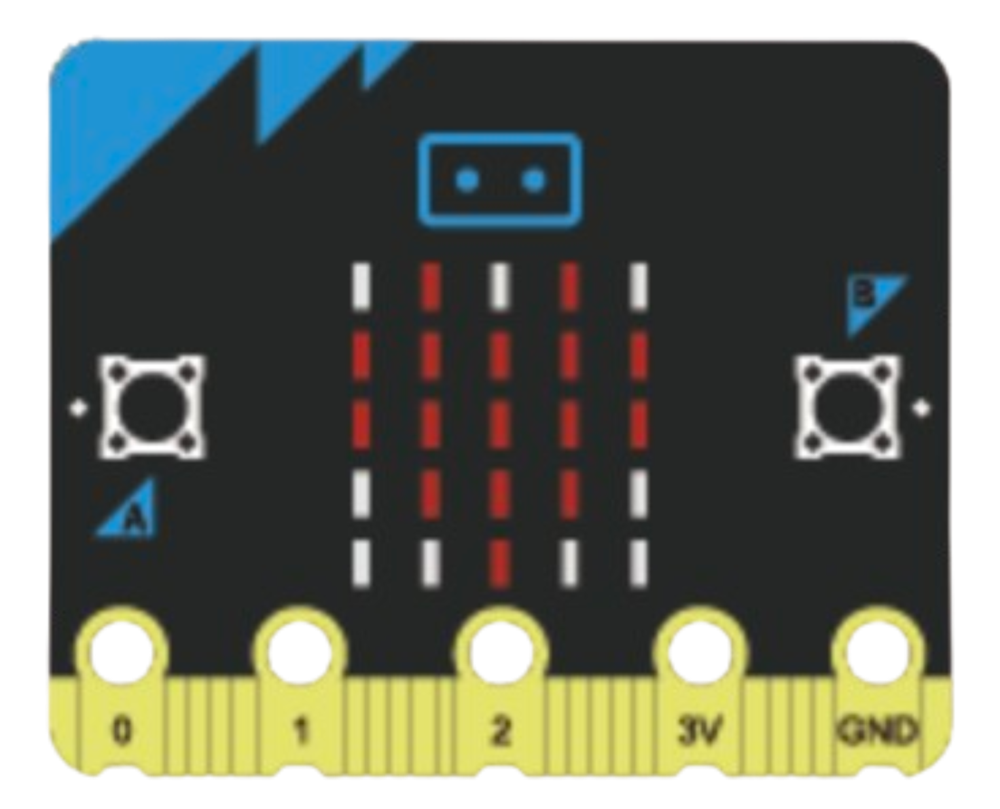

Meeting the brief
Basic requirements
Basic requirement 1
This embedded system satisfies BR1 by incorporating two analogue inputs, two digital inputs, and two primary digital outputs. The system operates automatically once the user completes initial setup
Inputs:
Analog inputs:

- Cup anaometer - Windspeed
- Thermometer - Temperature
Digital inputs:

- Button A - Start system
- Button B - Connect to WiFi + ThingSpeak
Primary outputs:

- LED screen
- OLED screen
System start:
- System starts by automatically initialising variables and creating empty list (used to compute max gust) while displaying a loading bar.System then promptes user to press B to start WiFi connection process
- WiFi connection process begins when user presses BSystem attempts to connect to WiFi, If successful then attempts to connect to thinkspeak (API + software used for data logging)
- If all succesful, User presses A to start data logging process
- The system runs automatically once started by the user and logs/measures all values without any futher user input.
Basic requirement 2
Collecting Enviromental data:

- Windspeed is collected by Cup anemometer
Collected in meters per second but computed to knots by system (1 m/s = 1.94384 kt) - Temperature is collected by thermometer
- Readings flow into the mircobit in an anaolog fashion
- Extra readings are then computed and derived from these readings including:
- Max/Min temperature
- Max 10 minute Gust (any time peroid can be choosen)
- Mean wind
Logging Enviromental data:

- Every time a set interval elapses, Computed data is sent to ThingSpeak Building a time-series dataset of windspeed and temperature readings over the session.
- This is done via WiFi and connecting to the ThingSpeak API using an API key
- I found ThingSpeak the most accurate method of data logging, I found serial to be inconsistant and the inbuilt data logger had space limitations
- ThinkSpeak allowed for secure and accessible data storeage
- The stored ThingSpeak data is exported as a CSV and used directly by the computer model
Basic requirement 3
Simulation of real world process:
- To simulate a real world process I used a fan and heater
- I simulated extreme heat conditions (Drought / low-humidity conditions) and relativley low/moderate wind conditions (Light Breeze (4-6 knots) - Based on the Beaufort Scale: Leaves rustle)
- As my model works from daily readings, In my hour long simulation I treated every 5 minutes like a new day! Causing the weird high minimum temperature
Tests to see how the system responds:
- Test 1 - Extreme heat: Heater raised temperature to ~60°C. System correctly updated max temperature. Amplification factor reflected the extreme reading.
- Test 2 — No wind: Fan removed. System recorded zero windspeed. Mean wind dropped accordingly
- Test 3 - Disconnecting Wi-Fi. System stopped computing and transmitting data, And displayed an Error message on the OLED screen
Advanced requirement 1
Computer model:
- My computer model takes in multiple weather variables
- My model uses a monte carlo simulation to generate many possible simulations (worlds)
- In each simulation a 7-day future path for each variable is generated
- Because weather patterns rely heavily on physical momentum and seasonality (past values)
- I used an autoregressive predictive model (introduced by British statistician George Udny Yule) with injected noise and randomness which models short-term correlations in time-series data, where the influence of past observations diminishes over time.
- The randomness is to simulate all the unpredictable ways a weather system could change, allowing us to see a full range of possible paths the storm might take rather than just one.
- The system then takes the weather readings from each simulation and computes a Damage score index (DSI)
- It does this by taking a varity of weather statistics from the simulation e.g rolling averages
- And weights and thresholds that are based on historical data and backpropogation
- The probability of a damaging event is calculated as the fraction of simulated scenarios where the maximum DSI exceeds the defined threshold, providing an estimate of P(DSI ≥ Threshold)
- Simulated Experience:
- If you play a level in a game 100 times and lose 20 times, your "probability of losing" is 20%. Since we can't wait for 100 real-life storms to happen to gather data, we use the computer to "play" the storm 1,000 times. The fraction of those 1,000 games where the storm was strong enough to cause damage becomes your best estimate for the real-world risk.
- Threshold is set to 0.35 as this was the DSI that damaging storms like Storm Éowyn exceeded Example DSI distribution of calm weather conditions
- The Monte Carlo DSI distribution is positively skewed, with most simulated outcomes producing moderate stress levels and a smaller right-hand tail representing rare but severe conditions. The threshold lies within this upper tail, indicating that high-risk weather scenarios occur infrequently under baseline conditions but are statistically possible
- Forestry damage is then estimated from DSI scores
- Each DSI is converted into a Estimated foresty damage
- If the DSI doesnt reach a certain threshold damage (Below a DSI of approximately 0.35) for that simulation is considered to be 0 (trees have a tipping point) The threshold was generated on historical damage also
- Damage is modeled exponentially. After surpassing the threshold, marginal increases in DSI lead to rapidly accelerating increases in forestry damage, because once environmental stress exceeds a critical tipping point, forest systems lose resilience and become increasingly vulnerable to compounding damage.
- In only rare statistical cases the damage is not 0 due to the calm historical conditions of this simulation
- But as DSI increases the Expected damage (hectares) increases exponentially
N = 8000 # Number of simulations / worlds
H = 7 # Number of days into future


The distribution of final day temperatures shows that most remain near the mean temperature with only rare cases going past 2 standard deviations

P(DSI ≥ 0.35) = 0.0424 | Percent: 4.24%

Combining data with my embedded system:
- My embedded system gathered only 1 hour worth of data
- But my model uses daily readings
- So the challenge is: how can I use my embedded systme data and combine it with my model?
- My solution: I used the embedded data to estimate something it is good at measuring: 👉 Short-term extremes and volatility ( liability to change )
- Not by replacing historical data, Instead: When Monte Carlo simulates wind or temperature multiply by the embedded amplification factor.
- It is a meaningful measure of how much stronger the variable was compared to typical conditions
- For my embedded system simulation process I simulated extreme temperature and low winds which are evident from the amplication factors
Gust amplification resolved as: 1.0637662135132027
Temperature amplification factor resolved as: 2.1316459228665514
The model uses 30 days of real historical meteorological data from Athenry weather station (Met Éireann open data), combined with the embedded system's amplification factors, to ground the Monte Carlo simulation in real-world conditions.
Advanced requirement 2
What-if simulation:
- The model allows the user to modify the historical data
- Example what-if's:
- What if Max Gust (kt) and Mean Wind Speed (kt) increased by 40% ?
- What if Max Temp (C) and Rain (mm) decreased by 80% ?
- Multiple variables can be edited
- The system allows the user to edit:
- Percentage % increase ↑ / decrease ↓
- Number of days into the future
- Number of simulation worlds
- Allowing to see how risk changes when different variables are changed and creating many possible what-if scenarios
A 40% increase caused a large increase in probaility from 4.24% to 40.31% - Expected as wind is weighted heavily in this model

A 80% decrease caused a small decrease in probaility from 4.24% to 0.90% - Expected as Rain and tempeature are not weighted that heavily but still caused a decrease


Advanced requirement 3
Adaptive Feedback mechanism:

- My model classifies risk into multiple levels
- Low Storm Risk (P < 25%): A low-priority notification is sent with a calm sound. Text displays: 'Low storm risk — Probability: X%'
- High Storm Risk (25% ≤ P < 60%): A warning notification is sent with an alert sound. Text displays: 'HIGH STORM RISK — Probability: X%'
- Extreme Storm Risk (P ≥ 60%): A critical notification fires with an urgent alarm sound. Text displays: 'EXTREME STORM RISK — Probability: X%'
- The system responds automatically as conditions change